Space Descriptions
A SpaceDesc is an immutable value that describes a spatial arrangement. It forms a tree whose leaves are individual rooms and whose internal nodes are composition operators.
SpaceDesc is KhepriBase's Level-2 representation (see Levels of Abstraction). Where a Layout (Level 1) holds an explicit list of placed spaces with boundaries, a SpaceDesc holds the recipe that layout compiles into those spaces.
Leaf Nodes
Room
A Room is the fundamental building block. It carries an identifier, a use (e.g. :bedroom, :kitchen), preferred dimensions, and optional properties:
bed = room(:bed, :bedroom, 4.0, 3.5)
bed = room(:bed, :bedroom, 4.0, 3.5; height=3.0, props=(min_windows=2,))
The width and depth are exact — the layout engine preserves them. When adjacent rooms have different depths, the building outline becomes stepped (no stretching).
Void
A Void represents empty space. A zero-sized void() is the true identity for beside_x, beside_y, and above — the combinators elide it at construction time, so void() | a === a.
A sized void(w, d) instead reserves that rectangle as a gap. Use it as a spacer when two rooms should not touch (e.g. around a service shaft):
# Conditionally include a balcony, or nothing if absent.
apartment = bed | kitchen | (has_balcony ? balcony : void())
# Two rooms with a 2 m gap between them (no shared wall, no adjacency).
plan = room(:a, :bedroom, 4.0, 3.0) | void(2.0, 3.0) | room(:b, :bedroom, 4.0, 3.0)
Envelope
An Envelope defines a rectangular volume for top-down subdivision. It works like a room but is meant to be partitioned into smaller zones:
floor = envelope(20.0, 10.0, 2.8)
A polar envelope is a ring sector — the root of a polar subtree:

Composite Nodes
Composite nodes are created by combinators (see Composition Operators):
BesideX— horizontal adjacency (x-axis)BesideY— depth adjacency (y-axis)Above— vertical stacking (z-axis)Repeated— unit repetition with scoped namespacesGridLayout— 2D grid of roomsScaled,Mirrored,HeightOverride— transformsPropsOverlay— merges aNamedTupleof props onto every placed space under its subtree; surfaced bywith_props,tag_wall_family, andtag_slab_family
Annotation Nodes
Annotated wraps a SpaceDesc with an override annotation. Annotations are transparent to layout — they only affect downstream element generation:
plan |> d -> connect(d, :a, :b, kind=:door) # wraps in Annotated nodeSubdivision Nodes
For top-down design (see Top-Down Subdivision):
Subdivided— proportional or absolute-position zone division (subdivide_x,subdivide_y,split_x,split_y)Partitioned— equal zone divisionCarved— freeform zone placementRefined— zone replacement with a sub-treeAssigned— zone use assignmentSubdivideRemaining— perimeter blocks around a central carve
Immutability
All SpaceDesc types are immutable structs. Combinators return new trees without modifying their inputs. This enables safe comparison of design variants and eliminates mutable state bugs.